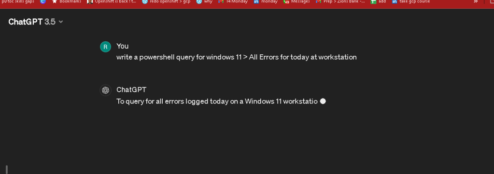
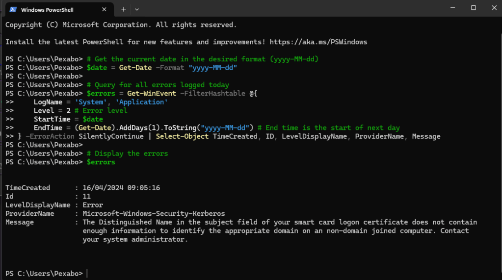
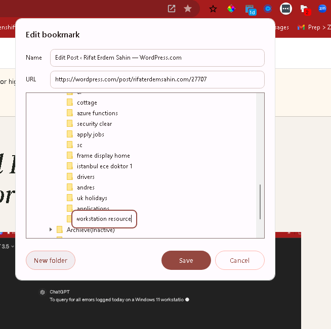
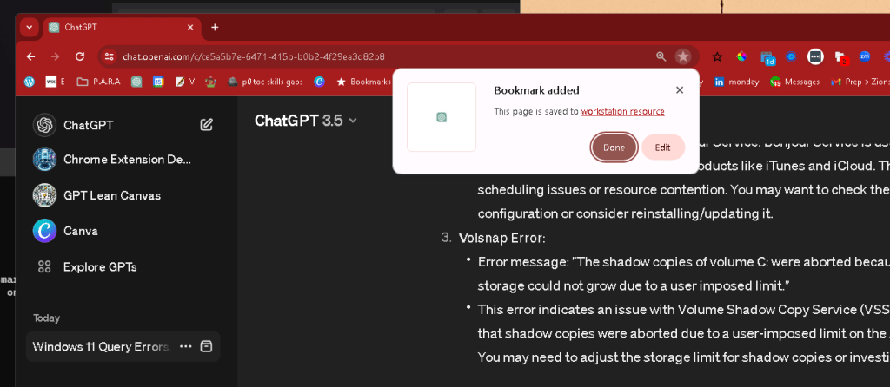
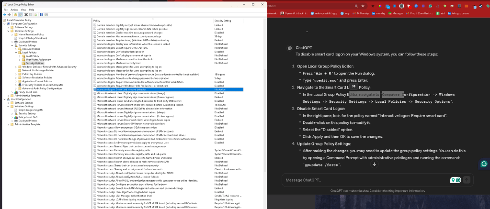
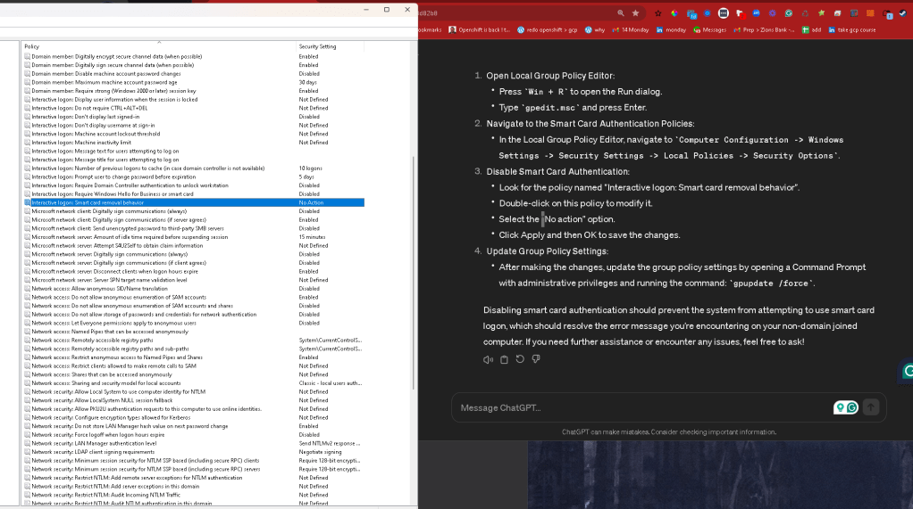

All Errors for today at workstation


Get the current date in the desired format (yyyy-MM-dd)
$date = Get-Date -Format "yyyy-MM-dd"
Query for all errors logged today
$errors = Get-WinEvent -FilterHashtable @{
LogName = 'System', 'Application'
Level = 2 # Error level
StartTime = $date
EndTime = (Get-Date).AddDays(1).ToString("yyyy-MM-dd") # End time is the start of next day
} -ErrorAction SilentlyContinue | Select-Object TimeCreated, ID, LevelDisplayName, ProviderName, Message
Display the errors
$errors
Maybe last 10 is better
`# Query for the last 10 errors
$errors = Get-WinEvent -FilterHashtable @{
LogName = 'System', 'Application'
Level = 2 # Error level
StartTime = (Get-Date).AddDays(-1) # Start time is 1 day ago
} -ErrorAction SilentlyContinue | Select-Object -First 10 TimeCreated, ID, LevelDisplayName, ProviderName, Message
Display the errors
$errors
`
Output
PS C:\Users\Pexabo> $errors
TimeCreated : 16/04/2024 09:05:16
Id : 11
LevelDisplayName : Error
ProviderName : Microsoft-Windows-Security-Kerberos
Message : The Distinguished Name in the subject field of your smart card logon certificate does not contain
enough information to identify the appropriate domain on an non-domain joined computer. Contact
your system administrator.
TimeCreated : 15/04/2024 17:43:31
Id : 100
LevelDisplayName : Error
ProviderName : Bonjour Service
Message : Task Scheduling Error: m->NextScheduledSPRetry 18156
TimeCreated : 15/04/2024 17:43:31
Id : 100
LevelDisplayName : Error
ProviderName : Bonjour Service
Message : Task Scheduling Error: m->NextScheduledEvent 18156
TimeCreated : 15/04/2024 17:43:31
Id : 100
LevelDisplayName : Error
ProviderName : Bonjour Service
Message : Task Scheduling Error: Continuously busy for more than a second
TimeCreated : 15/04/2024 17:43:30
Id : 36
LevelDisplayName : Error
ProviderName : Volsnap
Message : The shadow copies of volume C: were aborted because the shadow copy storage could not grow due to a
user imposed limit.
TimeCreated : 15/04/2024 17:43:29
Id : 100
LevelDisplayName : Error
ProviderName : Bonjour Service
Message : Task Scheduling Error: m->NextScheduledSPRetry 16656
TimeCreated : 15/04/2024 17:43:29
Id : 100
LevelDisplayName : Error
ProviderName : Bonjour Service
Message : Task Scheduling Error: m->NextScheduledEvent 16656
TimeCreated : 15/04/2024 17:43:29
Id : 100
LevelDisplayName : Error
ProviderName : Bonjour Service
Message : Task Scheduling Error: Continuously busy for more than a second
TimeCreated : 15/04/2024 17:43:28
Id : 100
LevelDisplayName : Error
ProviderName : Bonjour Service
Message : Task Scheduling Error: m->NextScheduledSPRetry 15125
TimeCreated : 15/04/2024 17:43:28
Id : 100
LevelDisplayName : Error
ProviderName : Bonjour Service
Message : Task Scheduling Error: m->NextScheduledEvent 15125
Based on the error messages you provided, it seems like there are a variety of issues occurring on your system:
-
Kerberos Smart Card Logon Error:
-
Error message: "The Distinguished Name in the subject field of your smart card logon certificate does not contain enough information to identify the appropriate domain on a non-domain joined computer."
-
This error suggests an issue with smart card logon configuration on a non-domain joined computer. You may need to review the smart card logon settings and ensure they are configured correctly.
-
Bonjour Service Errors:
-
Error messages:
"Task Scheduling Error: m->NextScheduledSPRetry 18156"
-
"Task Scheduling Error: m->NextScheduledEvent 18156"
-
"Task Scheduling Error: Continuously busy for more than a second"
-
"Task Scheduling Error: m->NextScheduledSPRetry 16656"
-
"Task Scheduling Error: m->NextScheduledEvent 16656"
-
"Task Scheduling Error: m->NextScheduledSPRetry 15125"
-
"Task Scheduling Error: m->NextScheduledEvent 15125"
-
These errors are related to the Bonjour Service. Bonjour Service is used for network discovery and can be associated with Apple products like iTunes and iCloud. The errors suggest scheduling issues or resource contention. You may want to check the Bonjour Service configuration or consider reinstalling/updating it.
-
Volsnap Error:
-
Error message: "The shadow copies of volume C: were aborted because the shadow copy storage could not grow due to a user imposed limit."
-
This error indicates an issue with Volume Shadow Copy Service (VSS) on drive C:. It suggests that shadow copies were aborted due to a user-imposed limit on the shadow copy storage. You may need to adjust the storage limit for shadow copies or investigate why it couldn't grow.
To resolve these issues:
-
For the Kerberos Smart Card Logon Error, review and adjust smart card logon settings.
-
For the Bonjour Service Errors, check the Bonjour Service configuration or consider reinstalling/updating it.
-
For the Volsnap Error, adjust the shadow copy storage limit or investigate why it couldn't grow.
If you need further assistance with any specific issue, feel free to ask!


https://chat.openai.com/c/ce5a5b7e-6471-415b-b0b2-4f29ea3d82b8
To disable smart card logon on your Windows system, you can follow these steps:
-
Open Local Group Policy Editor:
-
Press
Win + Rto open the Run dialog. -
Type
gpedit.mscand press Enter. -
Navigate to the Smart Card Logon Policy:
-
In the Local Group Policy Editor, navigate to
Computer Configuration -> Windows Settings -> Security Settings -> Local Policies -> Security Options. -
Disable Smart Card Logon:
-
In the right pane, look for the policy named "Interactive logon: Require smart card".
-
Double-click on this policy to modify it.
-
Select the "Disabled" option.
-
Click Apply and then OK to save the changes.
-
Update Group Policy Settings:
-
After making the changes, you may need to update the group policy settings. You can do this by opening a Command Prompt with administrative privileges and running the command:
gpupdate /force.
After following these steps, smart card logon should be disabled on your Windows system. Make sure to test the changes to ensure that they have been applied successfully. If you encounter any issues or need further assistance, feel free to ask!


windows >>> nothing you can do they need to update to remove the error!
Bonjour
The error message "Task Scheduling Error: Continuously busy for more than a second" related to the Bonjour Service indicates that the service is encountering issues with task scheduling and is being continuously busy for more than a second.
Here are some steps you can take to address this issue:
-
Restart the Bonjour Service:
-
Sometimes, simply restarting the Bonjour Service can resolve temporary issues. You can do this by following these steps:
Press Win + R to open the Run dialog.
-
Type
services.mscand press Enter. -
In the Services window, locate the "Bonjour Service", right-click on it, and select "Restart".
-
Update or Reinstall Bonjour:
-
Ensure that you are using the latest version of Bonjour Service. Visit the official Apple website or the software provider's website to download and install the latest version of Bonjour Service. Alternatively, you can uninstall the existing Bonjour Service from the Control Panel and then reinstall it.
-
Check for Conflicting Software:
-
Sometimes, other software installed on the system might conflict with the Bonjour Service. Temporarily disable or uninstall any recently installed software that might be interfering with Bonjour Service operations.
-
Check Event Viewer for More Information:
-
Review the Event Viewer logs for additional information about the error. Look for any related events or errors that might provide more context or clues about the root cause of the issue.
-
Contact Support:
-
If the issue persists after trying the above steps, consider reaching out to the support channels provided by the Bonjour Service or the software manufacturer for further assistance and troubleshooting.
By following these steps, you should be able to address the "Task Scheduling Error: Continuously busy for more than a second" related to the Bonjour Service. If you need further assistance, feel free to ask!
Bonjour Service is a network service discovery protocol developed by Apple Inc. It allows devices and services on a local network to automatically discover and communicate with each other without the need for manual configuration or central servers. Bonjour Service is primarily used in Apple products and services but is also available for Windows and other platforms.
Here are some common uses of Bonjour Service:
-
Network Service Discovery: Bonjour enables devices and services to advertise their presence on the local network. This allows other devices and services to discover and connect to them without requiring users to manually enter IP addresses or configure network settings.
-
Printer Discovery and Configuration: Bonjour simplifies the process of discovering and setting up network printers. Printers that support Bonjour can be automatically detected by computers and mobile devices on the same network, making it easy to print documents without manual configuration.
-
File Sharing and AirPlay: Bonjour facilitates the discovery of shared folders and devices for file sharing among computers and devices on the same network. It also supports features like AirPlay, which allows users to stream audio, video, and photos wirelessly between compatible devices.
-
Zero-configuration Networking: Bonjour employs zero-configuration networking (Zeroconf) techniques to enable devices to automatically assign IP addresses, resolve hostnames, and discover services without the need for a dedicated DHCP server or DNS configuration.
-
Multimedia Streaming: Bonjour supports protocols like Apple's AirPlay and DLNA (Digital Living Network Alliance), allowing multimedia content to be streamed between compatible devices over the local network.
Overall, Bonjour Service simplifies network setup and device discovery, enhancing the user experience by making it easier to connect and communicate with devices and services on the local network.
Imported from rifaterdemsahin.com · 2024